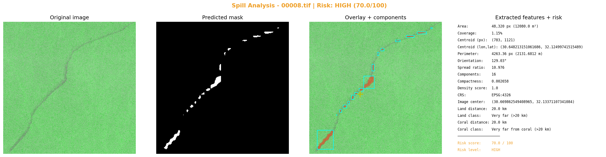

مركز الصورة: lon=30.669862549408965, lat=32.13371107341084
مركز التسرب: lon=30.648213151061686, lat=32.12499741515489
التاريخ: 2023-01-13 21:26:27
التحليل البصري

التقرير
**تقرير تحليل تسرب نفطي باستخدام صور الأقمار الاصطناعية SAR**
١. الملخص التنفيذي
تم تحليل صورة الأقمار الاصطناعية SAR لتحديد موقع تسرب نفطي في منطقة محددة. النتائج تشير إلى أن التسرب يقع على بعد 20 كم من اليابسة و20 كم من الشعب المرجانية، مما يشير إلى أنه بعيد جدًا من المناطق الساحلية.
٢. الموقع الجغرافي والتاريخ
* نظام الإحداثيات: EPSG:4326
* مركز الصورة: (30.669862549408965, 32.13371107341084)
* مركز التسرب: (30.648213151061686, 32.12499741515489)
* التاريخ: 2023-01-13 21:26:27
٣. الوصف الهندسي للتسرب
* المساحة: 48,320 بكسل (12080.0 م²)
* نسبة التغطية: 1.15%
* المحيط: 4263.36 بكسل (2131.6812 م)
* مركز البقعة (بكسل): (783, 1121)
* زاوية التوجّه: 129.03°
* نسبة الامتداد: 10.976
* معامل الانضغاط: 0.002658
* عدد البقع المنفصلة: 16
٤. القرب من اليابسة والشعب المرجانية والأثر البيئي
* المسافة من اليابسة: 20 كم (Very far)
* المسافة من الشعب المرجانية: 20 كم (Very far from coral)
٥. تقييم الخطورة
* Risk Score: 70.0 / 100
* Risk Level: HIGH
* العوامل:
+ coverage 1.15% → MINIMAL (<2%)
+ spread_ratio 10.976 → CRITICAL (>=10)
+ components 16 → CRITICAL
+ density 1.0 → CRITICAL
+ land 20.0 km → LOW
+ coral 20.0 km → LOW
٦. التوصيات
* توصية رقم ١: إجراء دراسة تفصيلية لتحديد حجم والتأثيرات البيئية للتسرب.
* توصية رقم ٢: وضع خطة للتصدير والتنظيف من التسرب.
* توصية رقم ٣: مراقبة التطورات المستقبلية للتسرب.
٧. الملاحظات
* يُحتاج إلى مزيد من التحليل والدراسة لتحديد حجم والتأثيرات البيئية للتسرب.
* يجب وضع خطة للتصدير والتنظيف من التسرب بسرعة.
* مراقبة التطورات المستقبلية للتسرب ضرورية.